-
お電話でのご注文・お問い合わせ
0120-378-877
午前9時〜午後6時
（お盆・年末年始期間を除く） -
カタログをお届けします
資料請求フォームはこちら

-
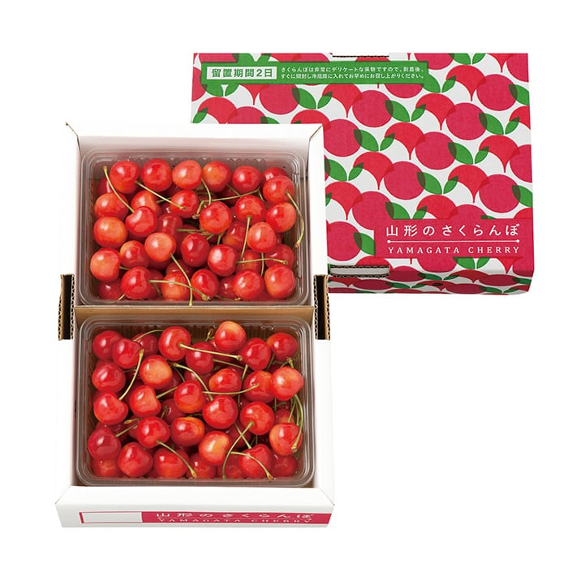
- 佐藤錦 １ｋｇ（５００ｇ×２）［バラ詰］
- 5,000円（税抜）
-
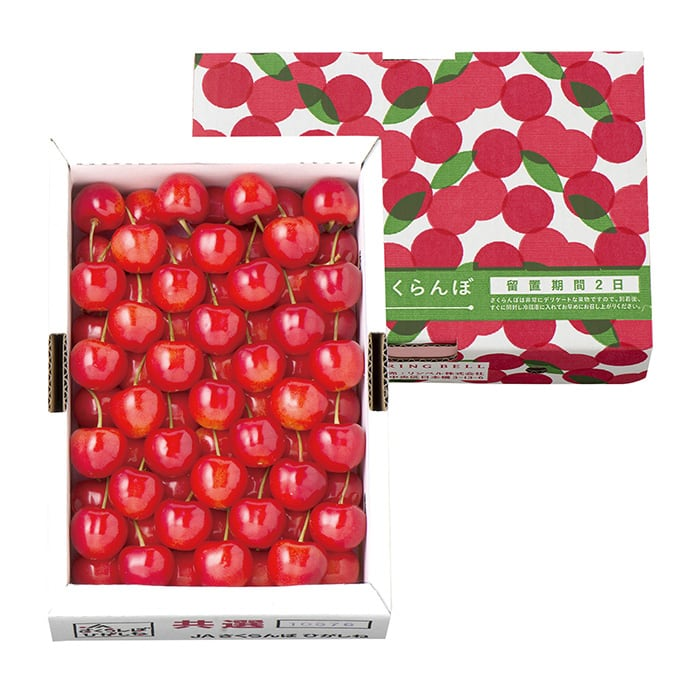
- 紅秀峰 ７００ｇ［置並べ］
- 5,556円（税抜）
-
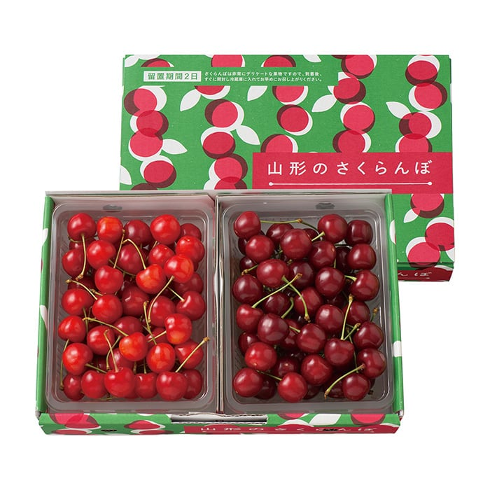
- 佐藤錦・山形美人 各３５０ｇ［バラ詰］
- 5,000円（税抜）
-
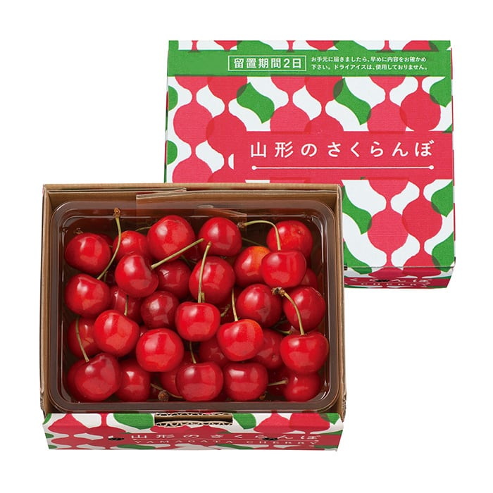
- 紅秀峰 ５００ｇ［バラ詰］
- 3,600円（税抜）
-
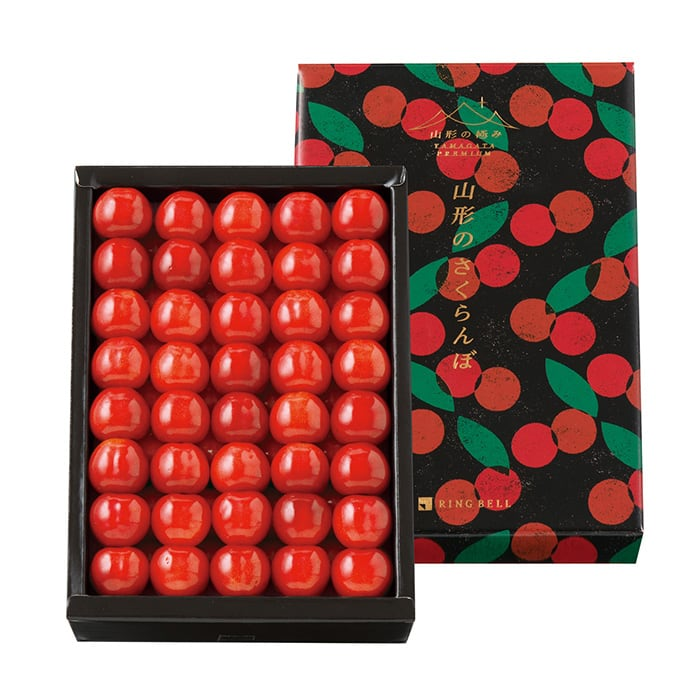
- 佐藤錦 ５００ｇ［化粧詰］
- 8,000円（税抜）
-
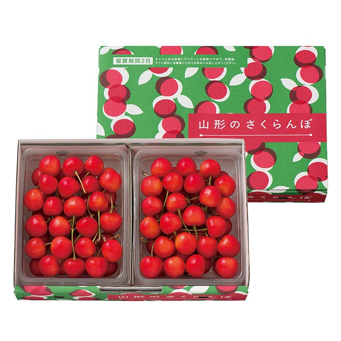
- 大将錦 ７００ｇ（３５０ｇ×２）［バラ詰］
- 7,000円（税抜）
-
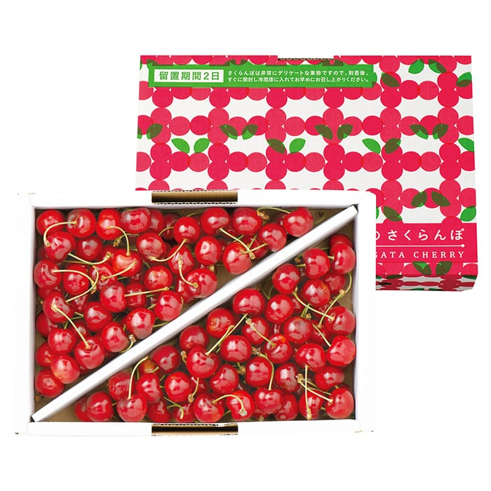
- 紅秀峰 １ｋｇ［バラ詰］
- 8,000円（税抜）
-
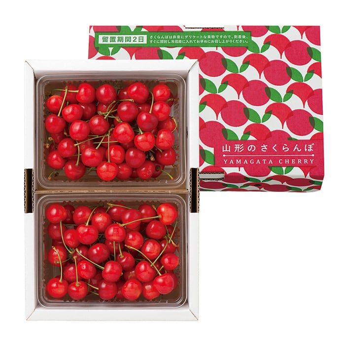
- 佐藤錦 ８００ｇ（４００ｇ×２）［バラ詰］
- 5,000円（税抜）
-
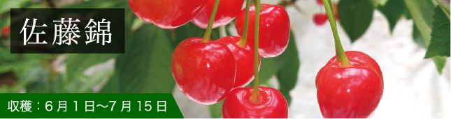
- さくらんぼの代名詞ともいえる人気の品種。果肉は乳白色で甘みと酸味のバランスが優れています。
- 一覧を見る
-
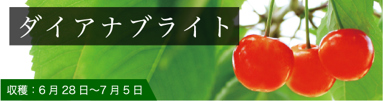
- 味・形ともに国産種の中では最大の大きさ。綺麗なサフランピンクの色づきでさくらんぼの女王とも称される。
- 一覧を見る
-
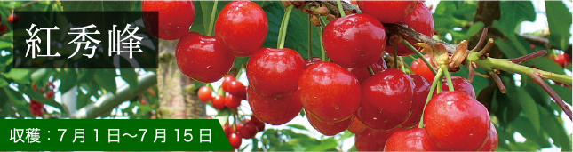
- 果肉はクリーム色で食べごたえのあるしっかりとした食感。酸味が少なく甘みが強い濃厚な味わいです。
- 一覧を見る
-
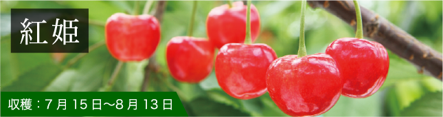
- ８月に入ってからでも食べられるように、摘みたてをそのまま専用の施設にて低温貯蔵された、さくらんぼ。
- 一覧を見る
-
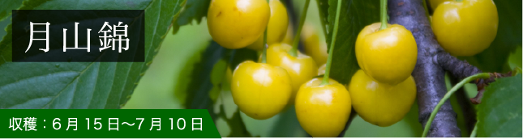
- 果皮が黄色く、甘みの強い大粒のさくらんぼ。国内では希少価値が高く、特に女性に人気。
- 一覧を見る
-
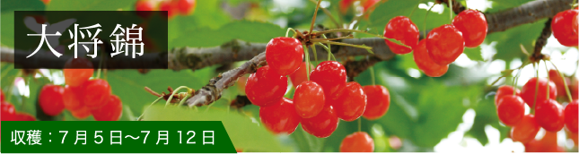
- さくらんぼの王様の意味『大将錦』、粒が大きく糖度と酸味のバランスが絶妙で味は濃厚。
- 一覧を見る
-
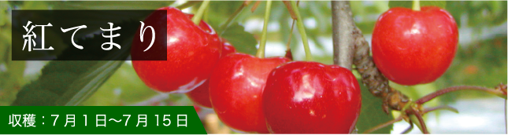
- 果肉は緻密でしっかりとしていて果汁が豊富。酸味がありバランスの良い味わいです。
- 一覧を見る
-
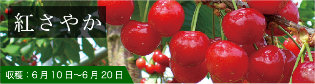
- 果皮は朱色〜紫黒色。果肉は鮮やかな淡赤色。早稲種としては大玉の、適度な甘みと酸味のさくらんぼ。
- 一覧を見る
-
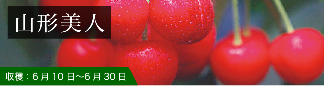
- 佐藤錦よりも果皮の赤味が強く、うっすらと白い線が入った、ツヤがある美しいさくらんぼです。果実は程よく引き締まっており、ほのかな酸味と濃厚な味わいが特徴。
- 一覧を見る
アートディレクター中山ダイスケ氏が手掛けた斬新なデザインのパッケージから、質感の高い桐箱詰まで、
幅広くご用意。ひとつひとつていねいに詰めています。
-
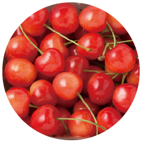
- バラ詰め
- 単純にバラバラ入れるのではなく、隙間をなるべく少なくし、配送中に傷がつかないように工夫した詰め方。
-
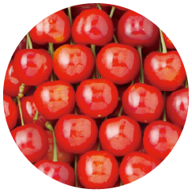
- 置並べ
- 箱を開けた時にさくらんぼの軸がなるべく見えないように、後ろに回していく詰め方。
-
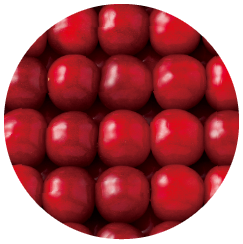
- 化粧詰
- 色のバランスも確認しながら、一粒一粒ていねいに詰めていく、熟練の技が求められる詰め方。
-
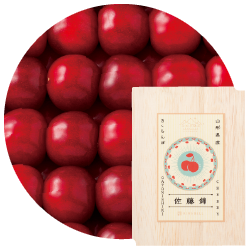
- 桐箱詰
- 化粧詰と同様の詰め方。高級感あふれるリンベルオリジナルの桐箱に詰めました。
-
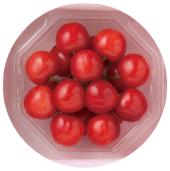
- ダイヤパック
- 透明なパックに、さくらんぼの軸が見えないよう放射状に詰めました。
等級、サイズともに、一定の基準を満たしたものだけを厳選しています。「等級」とは、着色面積の基準のこと。
高ければ高いほど、より見た目が鮮やかに。
- 等級とは – 佐藤錦の場合
- ・（秀）［マルしゅう］…50％以上
・秀…60％以上
・特秀…70％以上
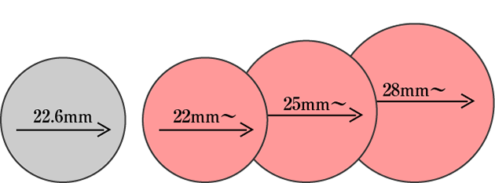
生産者の「顔が見える」こと
さくらんぼの栽培は、驚くほどの手間がかかるもの。だからこそ、そこには生産者たちの熱い思いが込められています。その想いを伝えることこそが、年間900万件のギフトを承る私たちリンベルが、一番こだわったことでした。


「さくらんぼ王国」山形の誇り
さくらんぼは、明治初期に欧米から導入され、風土に適合した山形県だけが実績をあげました。しかし、その頃の品種は実割れや実腐れが起こり、長期輸送も困難なもの。そこで、山形県東根市の佐藤栄助さんが、品種改良に挑み、16年もの苦労の末、日本を代表する人気品種「佐藤錦」が誕生します。
内陸部が盆地で、冬と夏、そして昼夜の寒暖差が大きく、さくらんぼ栽培の好適地だったこと。明治期から官民一体となって努力を重ねたこと。それらのことから、山形県は、現在では国内のさくらんぼ収穫量の7割を占める「さくらんぼ王国」となりました。

さくらんぼの栽培は、とても繊細で、手間がかかるものです。余分な芽を摘む、受粉を助ける、果実を間引きする、などは人の手が欠かせません。もちろん、収穫も手づみで行われます。3月から4月にかけては霜害を防ぐ温度管理、収穫時期が近づいてからは雨を防ぎ、日光が十分に行き渡るよう様々な手立てをほどこします。
「さくらんぼ王国」山形が、誇りを持って送り出すさくらんぼ、この機会にぜひご賞味ください。